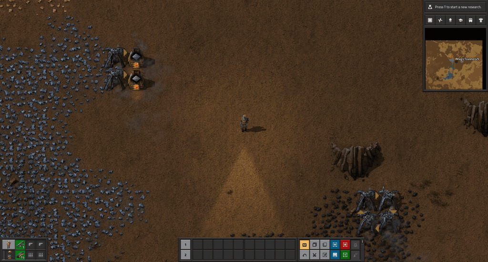

Generando el mundo
Este tutorial te guíara y dara consejos a lo largo del juego; hasta el punto donde consigas ciencia verde de forma automática, donde tendrás suficiente experiencia en el juego para abordar la mayoría de los retos en adelante sin ayuda. Esta guía está orientada al modo de juego "Freeplay".
Para empezar a jugar, debes crear un nuevo mundo, te encontrarás que puedes personalizar varios aspectos, como la riqueza y frecuencia de los recursos, las bases enemigas, los obstáculos naturales como las colinas, hasta la polución que es absorbida por el ambiente.
Si quieres una experiencia más fácil, puedes optar por la configuración "Recursos ricos" que hará justamente eso, habrá más recursos en el mapa.
Primeros pasos
Una vez que tengas tu mundo creado, verás que empiezas con un par de items: un horno, un taladro a carbón y una pistola. Intenta conseguir carbón para el taladro y el horno, si es posible picando piedras grandes que pueden contener carbón, si no hay cerca, deberías tener cerca una vena de mineral de carbón.
Luego de obtener el carbón, consigue hierro con el taladro, fundelo en el horno, y construye más taladros. Cuando tengas 2, 4, o más, pero un número par de taladros, puedes ponerlos en el carbón y conectarlos en cadena para recolectar el mineral. Consigue piedra para construir más hornos y luego ponlos con los taladros a producir placas de hierro. Deberías tener 6 o más pares de taladros y hornos produciendo hierro. Luego, haz un par más de taladros y hornos pero produce placas de cobre con ellos. Consigue suficiente cobre hasta que puedas fabricar lo siguiente:
- x1 Bomba costera
- x1 Caldera
- x1 Generador de vapor
- x2 Poste eléctrico
- x1 Laboratorio
- x10 Pack de ciencia de automatización
Una vez que tengas los materiales, ve cerca del agua y ponlos de la siguiente manera, asegurate de tener carbón para poder alimentar la caldera.
Investiga la tecnología "Automatización". Mientras se investiga, puedes atender los taladros produciendo hierro. Una vez que hayas investigado la tecnología, produce lo siguiente:
- x2 Máquina de ensamblaje 1
- x3 Insertador
- x4 o cuanto necesites de Postes eléctricos
- x1 Cofre (cualquiera)
Cuando tengas los materiales, puedes ponerlos de la siguiente manera para empezar a producir ciencia roja. Puedes conectar la máquina que construye los páquetes de ciencia directamente al laboratorio de antes, incluso puedes agregarle un laboratorio más. Répite el mismo proceso, pero en vez de producir los páquetes de ciencia, produce cintas transportadoras.
Seguridad
Ahora sería un buen momento para empezar a producir elementos para protegerse de la fauna local. Produce taladros, eléctricos o a carbón, y ponlos a minar piedra. Produce algunas máquinas de ensamblaje y ponlas a producir munición. Investiga las torretas, paredes y el equipo militar 1. Produce y equipate con la armadura y la ametralladora que has desbloqueado Pon algunas torretas al rededor de tu base, no te olvides de suministrarles munición. Con la piedra que has recolectado, empieza a producir paredes. Es recomendable que pongas un radar cerca de tus máquinas, y que vayas produciendo más en cuanto lo vayas necesitando. Te permiten ver un área cerca de tus máquinas en el mapa, incluso si no estás cerca y van revelando terreno distante, permitiendote saber por adelantado donde se encuentran los enemigos.
Primer Base
Ahora tienes lo esencial para empezar a construir la primer base en la que estarás por un buen tiempo. Esta base debe suministrarte con materiales de construcción, munición y otros elementos de seguridad. El primer paso para construir esta base es hacer unos cuantos hornos y taladros eléctricos, calderas y generadores de vapor, cintas y insertadores. Fabrica:
- Un total de 10 calderas (incluyendo la que ya has construído antes)
- Un total de 20 generadores de vapor
- x18 taladros eléctricos
- x36 hornos
- x50 Poste eléctrico
Es recomendable que pongas máquinas ensambladoras a producir cintas e insertadores si todavía no lo has hecho.
Utiliza 4 taladros para la piedra, el cobre, y el carbón. Los 6 taladros restantes ponlos en el hierro. Pon las calderas y los generadores cerca del agua, y si es posible también cerca del carbón. Conecta los taladros de carbón a las calderas a través de cintas, y haz que los insertadores alimenten a las calderas. Conecta todo con postes eléctricos a medida que lo vayas necesitando. Pon 24 hornos a producir hierro y 12 a producir cobre. Conectalos al carbón, o mejor aún, pon más taladros en el carbón que sean dedicados a alimentar los hornos.
Finalmente, junta lo suficiente para hacer 10 o más máquinas ensambladoras. Haz que cada una produzca cada material necesario para producir las máquinas ensambladoras, y cuando los obtengas todos podrás expandir tu base rápidamente. También, es recomendable automatizar la producción de munición, torretas y paredes, en ese orden. No produzcas un número excesivo de torretas porque son caras, y pueden drenar tus recursos.
Estás a un paso de producir ciencia verde. Solo es cuestión de producir los insertadores y las cintas transportadoras, juntarlas, producir ciencia verde en los ensambladores y finalmente darselo a los laboratorios.
¡Hasta acá llega la guía! Ahora deberías tener lo básico del juego y una base que te cuídara de la fauna local. El siguiente paso es hacerte camino a la ciencia ázul. Tómate tu tiempo, y recuerda de aumentar tus defensas si es necesario ¡Los enemigos evolucionan!
Véase también
Si tienes dudas en algo particular, puedes ver la sección de mécanicas y entidades: Mecánicas y entidades
Si requieres más ayuda, puedes ver las guías de la comunidad en los foros, o en la Comunidad de Steam.